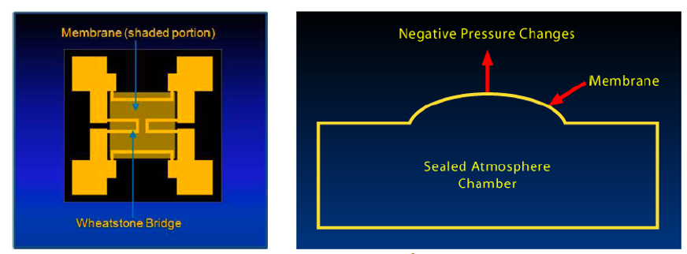
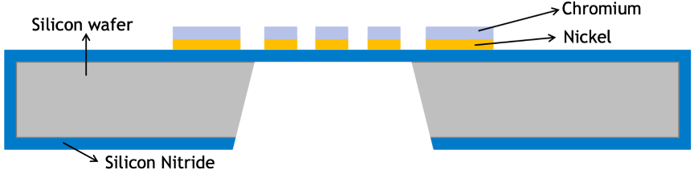
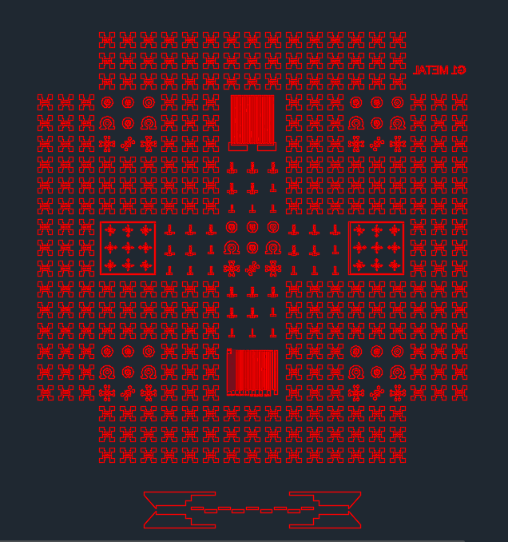
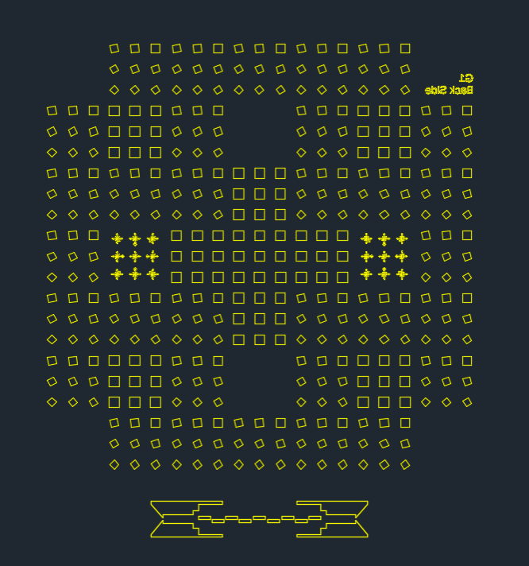
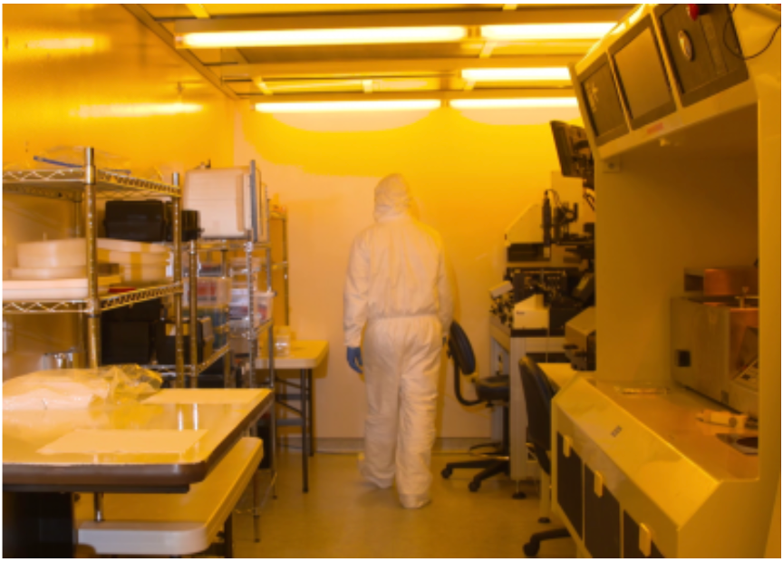
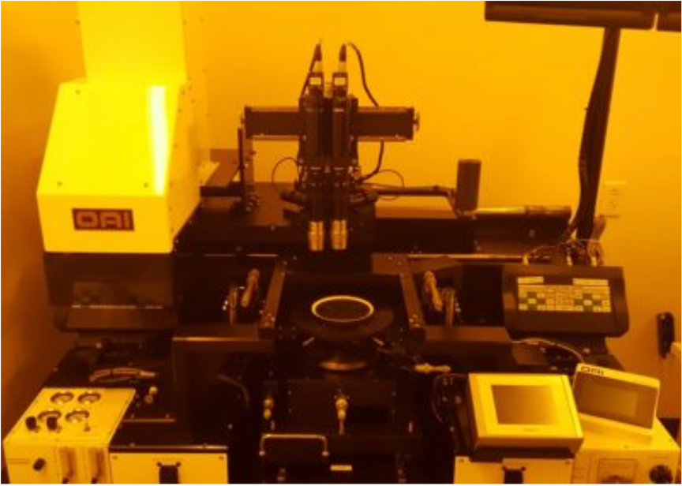
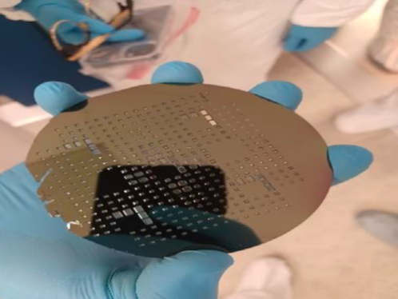
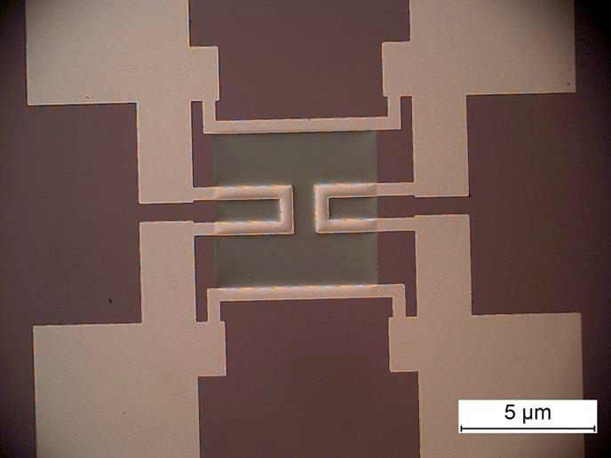
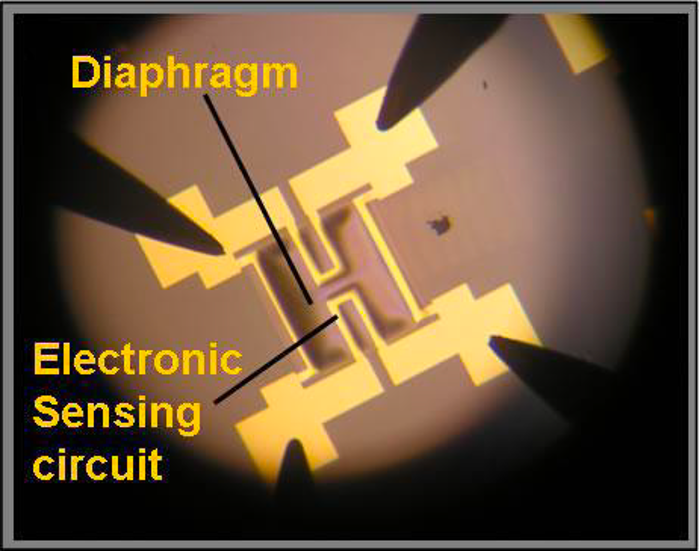

Wheatstone Bridge
MEMS Pressure Sensor
Design, Fabrication, and Testing of a MEMS-Based Pressure Sensor


Project Overview
This project was developed under the course EGN5013C: Introduction to Nanofabrication at Florida International University. The goal was to design, fabricate, and test a MEMS-based pressure sensor leveraging standard cleanroom-based microfabrication techniques. The Wheatstone bridge configuration allows precise measurement of small pressure-induced resistance changes.
Design & Layout
The Wheatstone bridge sensor consists of four resistive elements arranged in a bridge configuration to measure small changes in pressure. The layout was developed using LayoutEditor, with frontside and backside masks designed for layered processing.


Fabrication Process
Fabrication took place in a Class 100 cleanroom environment. The major process steps included:
- Cleanroom Preparation: Class 100 cleanroom protocol adherence
- Substrate Preparation: Spin coating using spin coater
- Lithography: Mask alignment using OAI Mask Aligner, Laser Lithography for mask writing
- Etching: Reactive Ion Etching (RIE) and Deep Reactive Ion Etching (MARCH DRIE)
- Thin Film Deposition: Sputtering, Evaporation (PVD), Plasma-Enhanced CVD (PECVD)
- Profilometry: Film thickness measurement using ALPHA STEP Profilometer
- Packaging: Bonding with wedge bonder




Tools & Equipment Used
- LayoutEditor
- Heidelberg 101 Laser Lithography
- OAI Mask Aligner
- Reactive Ion Etching (RIE)
- MARCH Deep RIE (DRIE)
- PVD Sputtering System
- PVD Evaporation System
- Plasma-Enhanced CVD (PECVD)
- ALPHA STEP Profilometer
- Wedge Bonder
Testing & Results
Following fabrication, the Wheatstone bridge sensor was tested under varying pressure to validate its sensitivity and functional response. The change in resistance of the bridge arms was recorded and output voltage changes were measured to assess sensor performance.

Downloads
- Full Project Report (PDF)
- Fabrication Protocol & SOPs (PDF)
- Process Run Cards (XLSX)
- Metrology Data (XLSX)
Conclusion
The successful fabrication and testing of a Wheatstone Bridge Pressure Sensor provided deep insights into semiconductor fabrication, thin film deposition, lithography, and cleanroom protocols. This hands-on project not only reinforced microfabrication concepts but also strengthened troubleshooting and testing skills essential in the semiconductor and MEMS industries.